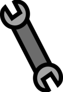
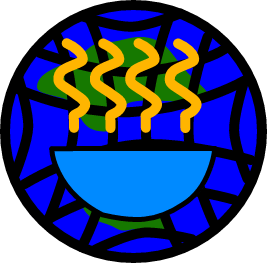

Start page
Features
About
X
✓
Start page
Google
Bing
Yahoo
DuckDuckGo
No AI
Ecosia
Other
Features
Tabs
Allow websites to create tabs.
Restore previous session on startup
Download
Download manager
Download history
Bookmarks
Restore previous bookmarks on startup
Start with system
Current tab name in window title
Kiosk mode
Edit password
Show saved password
Advanced
Allow pop-ups
Inject fixes to page
About
Soep Browser
Error
Error

An easily modifiable open-source browser built with NW.js.
By SoepSoft
Reset browser
View on GitHub
Clear download history
X
Downloads
Waiting for cleared download history to save to database...